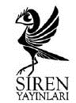

www.sirenyayinlari.com
info@sirenyayinlari.com
sireninsesi.blogspot.com
The Bus Driver Who Wanted To Be God
© Etgar Keret, 2004
Katzenstein, Alon Şemeş’in Esrarengiz Kayboluşu, Mossad Şefinin Oğlu, İlkoğul Belası, Siren ve Borular; İbranicede ilk olarak Pipelines’da yer almıştır (Am Oved, 1992.)
Duvardaki Delik, Domuzu Kırmak, Emniyet Mandalı Açık, Uçan Santiniler, Korbi’nin Sevgilisi, Ayakkabılar, Kissinger’ı Özlemek ve İyi Niyet; İbranicede ilk olarak Missing Kissinger’da yer almıştır. (Zmora Bitan, 1994.)
Tanrı Olmak İsteyen Otobüs Şoförü, Cehennemden Bir Hatıra, Rahim ve Kneller’in Mutlu Kampı; İbranicede ilk olarak Kneller’s Happy Campers’da yer almıştır. (Keter & Zmora Bitan, 1998.)
Goodman, Rabin Öldü, Son Bir Öykü ve Tamam ve Jetlag; İbranicede ilk olarak Anihu’da yer almıştır. (Zmora Bitan, 2002.)
Ayakkabılar, Kissinger’ı Özlemek, Mossad Şefi’nin Oğlu ve Borular; Etgar Keret ve Samir El Youssef ortak çalışması Gazze Blues’da yer alır. (Siren, 2009) © Etgar Keret. World translation rights by arrangement with the Institute for the Translation of Hebrew Literature. Türkçe yayın hakları Kalem Ajans aracılığıyla Siren Yayınları’na aittir.
Siren Yayınları - Öykü
Birinci Baskı: Ekim 2010
Beşinci Baskı: Eylül 2012
Yayın Yönetmeni: Sanem Sirer
Yayın Danışmanı: Erol Aydın
Çeviren: Avi Pardo
Kapak Tasarım: Nazlım Dumlu
Asmalı Mescit Mah. Ensiz Sokak No. 9/312
Beyoğlu-İSTANBUL
t (212) 243 45 65 f (212) 251 05 32